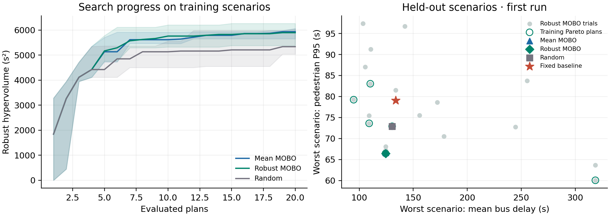

Bayesian Optimization in Everyday Life · 作業提案
公館圓環改造後的尖峰號誌最佳化
用穩健多目標貝葉斯最佳化兼顧公車與行人
1 問題與使用者
2025 年 9 月 29 日，臺北市公館圓環改造為羅斯福路與基隆路的正交路口。市府持續觀察車流與調整設施設定 [1]。本提案服務交通工程人員，受益者是尖峰搭公車的通勤者與過街行人。若增加主幹道綠燈，公車可能更快通過，但穿越主幹道的行人可能多等一輪。公車成團到達或橫向車流增加時，這項取捨也可能改變。
工程人員可依觀測和既有時制逐步調整。Google Project Green Light 用 Maps 的駕駛趨勢辨識號誌改善機會，再提供城市可採用的調整建議 [2]。本提案借鑑這個決策流程，用 BO 排定模擬候選的優先順序，讓工程人員從有限評估中看到多種取捨。
2 設計變數、目標與評估成本
| 項目 | 原型設定 |
|---|
| 週期長度 C | 100–160 秒。 |
| 主幹道綠燈比 r | 45–65%。每相位先保留 25 秒綠燈與 5 秒清道，剩餘秒數按 r 分給主幹道，餘數分給橫向。橫向相位末 12 秒保留行人清空時間。 |
| 兩項目標 f(x) | 最小化公車平均排隊延誤，以及穿越主幹道的行人等待時間第 95 百分位。另追蹤一般車平均延誤。 |
原型對一般尖峰、公車成團到達及橫向交通尖峰建立一小時的隨機到達序列。公車與一般車各按車道佇列在綠燈期間先到先服務，行人等待至可開始穿越。正式評估每組候選須跨尖峰需求與隨機樣本執行校準過的交通模擬，實地驗證還要跨日觀察。原型以較便宜的合成模擬演示如何分配這個預算。
3 最佳化流程
每次先測四組分散的 Sobol 候選，每組在三種需求下各跑四個共用亂數樣本。兩個 GP 從結果學習時制與指標的關係，BoTorch 的 qLogNEHVI [4] 依預期 Pareto 超體積改善，從離散候選網格選下一組。系統把模擬結果回傳給模型，直到完成 20 組。最後呈現 Pareto 前緣供工程人員選擇，也用預先固定的等權規則挑一組做保留情境比較。
公館號誌最佳化 ／ 1 / 2
方法與實驗結果
4 為什麼需要多目標與穩健性？
多目標 BO 保留各種公車與行人的取捨，避免一開始就固定兩者的權重。穩健版本先算每個需求情境的指標，再對每項目標取三種情境中的最大值。兩項最壞值可出現在不同情境，因此不會用其他情境的好表現抵銷某一類尖峰的長延誤。Kinnunen 等人 [3] 研究如何找到能達標且容忍更大環境變化的設計。本原型借鑑其環境不確定性觀點，實作有限情境最壞值的 MOBO。
實驗比較平均情境 MOBO、最壞情境 MOBO、均勻隨機搜尋，以及固定 130 秒／55% 的合成時制。三種搜尋各重複四次，每次用相同的起始點和評估預算。每次搜尋只用訓練結果選出一組代表方案，再用較高到達率及每情境 12 個新亂數樣本測試。

圖 1。左圖為四次搜尋的訓練穩健超體積中位數與範圍，愈高愈好。右圖為第 1 次搜尋的保留情境結果，空心圈為訓練 Pareto 方案。
| 方法 | 公車延誤（秒） | 行人 P95（秒） | 一般車延誤（秒） |
|---|
| 固定合成時制 | 133.7 | 79.1 | 38.5 |
| 平均情境 MOBO | 124.4 | 66.5 | 48.7 |
| 最壞情境 MOBO | 112.7 | 70.4 | 72.5 |
| 隨機搜尋 | 99.8 | 73.4 | 60.9 |
表 1。每次先取各指標的最壞保留情境，再對四次搜尋取中位數。三欄愈低愈好。
最壞情境 MOBO 相較固定時制，公車延誤少 20.9 秒、行人 P95 少 8.6 秒，一般車延誤卻多 34.0 秒。與平均情境 MOBO 相比，最壞情境 MOBO 進一步減少公車延誤，但行人等得較久。隨機搜尋的公車延誤最低，兩種 MOBO 的訓練穩健超體積中位數則較高。若進入現地評估，可把一般車延誤上限列為選案條件。
原型使用合成需求與獨立車道佇列。橫向回堵影響一般車指標，但模擬沒有車道間交互阻塞。現地應用前須校準車流與時制，再檢查轉向、相鄰路口回堵與行人安全。
- 臺北市新建工程處，公館圓環改造；臺北市議會，公館圓環交通改善成果。
- Google Research，Project Green Light。
- Kinnunen et al. (2026), Maximally Robust Satisficing Bayesian Optimization, UAI.
- BoTorch, Multi-objective BO tutorial.
公館號誌最佳化 ／ 2 / 2